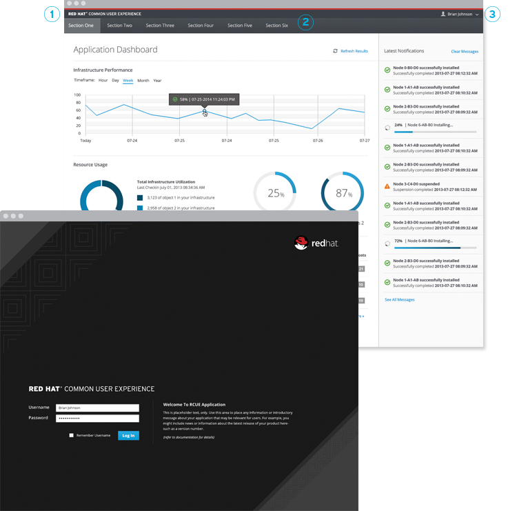

DISCOVERABLE LINUX
for next generation of
SYSTEM ADMINISTATORS
Demo: Port 9090 login
What?
Code name: Cockpit
Project: Cockpit
A remote interactive
Linux admin interface
1. Linux usable
by non-expert admins
2. Complex Linux features
discoverable
Building your own
truck^H^H^H^H^Hsystem
But but, I just want
to drive it
Drive it:
Make a network bond
Drive it:
Troubleshoot SELinux
Drive it:
Mount an iSCSI disk
Drive it:
Start a Container
Pure interface, no "mid-tier"

Show me:
Access a System API
Show me:
Spawn a Process
Build it:
Export a directory over NFS
Prove it:
Starts on demand
Prove it:
Cockpit over SSH
Integration with
management tooling
Red Hat Common User Experience

Questions?
cockpit-project.org
#cockpit on Freenode
github.com/cockpit-project/cockpit
Credits:
Credits:
d10n2000 on Flickr, bigfez on Flickr, dalbera on Flickr
axeman3d on Flickr, toddmccann on Flickr